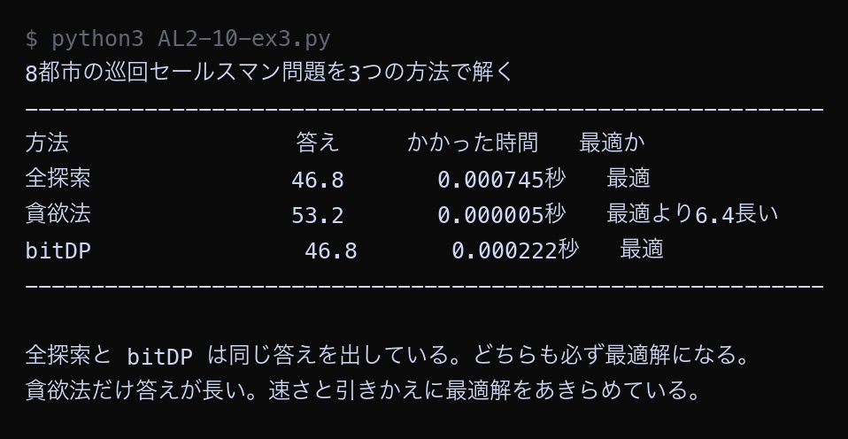

例題
例題1から例題4までのコードを実行してください。 例題4は実行に10秒ほどかかります。まず作業フォルダを用意します。
VS Code でフォルダとファイルを用意する
Step 1: 作業フォルダを作る
- デスクトップに AL2 という名前のフォルダを作る（後期の授業ではずっと同じフォルダを使う）
- AL2 フォルダの中に No10 という名前のフォルダを作る
└── AL2/
├── No09/ ← 前回のファイル
└── No10/ ← 第10回はここに保存
Step 2: VS Code でフォルダを開く
- Visual Studio Code を起動する
- メニューから 「ファイル」→「フォルダーを開く」を選ぶ
- Step 1 で作った AL2/No10 フォルダを選んで開く
左側のエクスプローラーに No10 フォルダの中身が表示される（最初は空）。
Step 3: 例題ごとにファイルを作って実行する
- 左側エクスプローラーの No10 の横にある 新しいファイルアイコンをクリック
- ファイル名を入力して Enter（例題1なら
AL2-10-ex1.py） - 例題のコードブロック右上の コピーボタンをクリック
- VS Code の編集画面に 貼り付ける（Ctrl+V / Cmd+V）
- 保存する（Ctrl+S / Cmd+S）
- 右上の ▷（再生ボタン）をクリックして実行する
今回作るファイル: AL2-10-ex1.py, AL2-10-ex2.py, AL2-10-ex3.py, AL2-10-ex4.py
今回のキーワード
| 用語（読み方） | 説明 |
|---|---|
| 動的計画法 どうてきけいかくほう / DP | 一度計算した答えを表に記録しておき、同じ計算をくり返さないようにする方法。 |
| bitDP ビットディーピー | 「どの要素を選んだか」を2進数1つで表して行う動的計画法。巡回セールスマン問題によく使われる。 |
| ビット演算 ビットえんざん | 2進数のけたごとに行う計算。<<（ずらす）、|（または）、&（かつ）を使う。 |
| 状態 じょうたい / state | 動的計画法で「表のどのマスか」を決める情報。巡回セールスマン問題では「回った集合」と「いまいる都市」の2つ。 |
| メモ化 memoization | 一度求めた答えを覚えておいて使い回すこと。動的計画法の考え方の中心にある。 |
ビットで集合を表す練習
bitDP を書く前に、ビットで集合を表す練習をします。
<<、|、& の3つの記号だけ覚えれば足ります。
Python ── AL2-10-ex1.py # 「どの都市を回ったか」を2進数1つで表す練習 # 都市が5個あるとき、「回った・回っていない」を5けたの0と1で表す。 # いちばん右のけたが 0番の都市、その左が 1番の都市、… city_names = ["学校", "郵便局", "図書館", "カフェ", "公園"] n = len(city_names) def pad(text, width): """全角文字を2文字ぶんとして数え、右側に空白を足して表示の幅をそろえる""" length = 0 for ch in text: if ord(ch) > 0x2000: length = length + 2 else: length = length + 1 return text + " " * (width - length) def show(bits): """bits を2進数と、回った都市の名前で表示する""" binary = format(bits, "05b") # 5けたの2進数にそろえる visited = [] for i in range(n): if bits & (1 << i): # i番目のけたが1かどうかを調べる visited.append(city_names[i]) if len(visited) == 0: names = "（まだどこにも行っていない）" else: names = "、".join(visited) print(f" {bits:>2} = 2進数 {binary} → {names}") print("2進数1つで「回った都市の集合」を表す") print("-" * 52) show(0) show(1) show(3) show(5) show(31) print("-" * 52) print() print("1つの都市を表す数（1 << i は「1を左へ i けたずらす」という意味）") print("-" * 52) for i in range(n): print(" " + pad(city_names[i], 8) + f"→ 1 << {i} = {1 << i:>2} = 2進数 {format(1 << i, '05b')}") print("-" * 52) print() print("集合に都市を1つ足す（| は「または」。けたごとに 1 があれば 1 にする）") print("-" * 52) bits = 0 for i in range(n): before = bits bits = bits | (1 << i) # i番の都市を「回った」ことにする print(f" {format(before, '05b')} に {city_names[i]} を足す → {format(bits, '05b')}") print("-" * 52) print() print("集合に都市が入っているか調べる（& は「かつ」。両方 1 のけただけ 1 にする）") print("-" * 52) bits = 5 # 2進数 00101 = 学校 と 図書館 print(f" いまの集合: {format(bits, '05b')}") for i in range(n): if bits & (1 << i): print(f" {city_names[i]}: 入っている") else: print(f" {city_names[i]}: 入っていない") print("-" * 52) print() print("5個の都市なら、集合の種類は 2の5乗 = 32 通り（0 から 31 まで）")
▶ 実行結果
![AL2-10-ex1.py の実行結果。2進数1つで「回った都市の集合」を表す / ---------------------------------------------------- / 0 = 2進数 00000 → （まだどこにも行っていない） / 1 = 2進数 00001 → 学校 / 3 = 2進数 00011 → 学校、郵便局 / 5 = 2進数 00101 → 学校、図書館 / 31 = 2進数 11111 → 学校、郵便局、図書館、カフェ、公園 / ---------------------------------------------------- / / 1つの都市を表す数（1 << i は「1を左へ i けたずらす」という意味） / ---------------------------------------------------- / 学校 → 1 << 0 = 1 = 2進数 00001 / 郵便局 → 1 << 1 = 2 = 2進数 00010 / 図書館 → 1 << 2 = 4 = 2進数 00100 / カフェ → 1 << 3 = 8 = 2進数 01000 / 公園 → 1 << 4 = 16 = 2進数 10000 / ---------------------------------------------------- / / 集合に都市を1つ足す（| は「または」。けたごとに 1 があれば 1 にする） / ---------------------------------------------------- / 00000 に 学校 を足す → 00001 / 00001 に 郵便局 を足す → 00011 / 00011 に 図書館 を足す → 00111 / 00111 に カフェ を足す → 01111 / 01111 に 公園 を足す → 11111 / ---------------------------------------------------- / / 集合に都市が入っているか調べる（& は「かつ」。両方 1 のけただけ 1 にする） / ---------------------------------------------------- / いまの集合: 00101 / 学校: 入っている / 郵便局: 入っていない / 図書館: 入っている / カフェ: 入っていない / 公園: 入っていない / ---------------------------------------------------- / / 5個の都市なら、集合の種類は 2の5乗 = 32 通り（0 から 31 まで）](images/a10_ex1_result.png)
数 5 は2進数で 00101 となり、右から1けた目（0番の学校）と3けた目（2番の図書館）が 1 なので、「学校と図書館を回った」という意味になります。1 << 3 は 01000 で、3番のカフェだけを表します。| を使うと集合に都市を1つ足せ、& を使うと入っているかどうかを調べられます。5個の都市なら、集合の種類は32通りしかありません。
bitDP で巡回セールスマン問題を解く
bitDP で巡回セールスマン問題を解きます。
best[visited][here] という表を作り、
「visited の都市を回り終えて、いま here にいる」ときの最小距離を記録していきます。
Python ── AL2-10-ex2.py # 動的計画法（bitDP）で巡回セールスマン問題を解く # 考え方: 「どの都市を回ったか」と「いまどこにいるか」が同じなら、 # そこまでの最小距離だけ覚えておけばよい。 import math from itertools import permutations cities = [ ("学校", 2, 2), ("郵便局", 10, 3), ("図書館", 14, 9), ("カフェ", 6, 12), ("公園", 3, 8), ] n = len(cities) INF = float("inf") distance = [] for i in range(n): row = [] for j in range(n): d = math.sqrt((cities[i][1] - cities[j][1]) ** 2 + (cities[i][2] - cities[j][2]) ** 2) row.append(d) distance.append(row) full = (1 << n) - 1 # 全部の都市を回った状態（2進数で 11111） # best[visited][here] = 「visited の都市を回り終えて、いま here にいる」ときの最小距離 best = [] for visited in range(1 << n): best.append([INF] * n) # 最初は 0番の都市だけを回った状態で、0番にいる。距離は 0。 best[1 << 0][0] = 0.0 # 回った都市の集合を、小さい順に1つずつ調べていく for visited in range(1 << n): for here in range(n): if best[visited][here] == INF: continue # まだたどり着けていない状態 for next_city in range(n): if visited & (1 << next_city): continue # すでに回った都市には行かない new_visited = visited | (1 << next_city) new_length = best[visited][here] + distance[here][next_city] if new_length < best[new_visited][next_city]: best[new_visited][next_city] = new_length # 全部回り終えたあと、0番へ戻る分を足していちばん短いものを選ぶ answer = INF last_city = None for here in range(n): if best[full][here] == INF: continue total = best[full][here] + distance[here][0] if total < answer: answer = total last_city = here print("動的計画法（bitDP）の表の一部") print("（visited = 回った都市の集合を2進数で表したもの、here = いまいる都市）") print("-" * 62) print("visited here=0 here=1 here=2 here=3 here=4") for visited in [1, 3, 7, 15, 31]: line = f" {format(visited, '05b')} " for here in range(n): value = best[visited][here] if value == INF: line = line + " - " else: line = line + f"{round(value, 1):>8} " print(line) print("-" * 62) print("「-」は「その状態にはたどり着けない」ことを表す") print() print("bitDP の答え:", round(answer, 1)) print("最後に立ち寄った都市:", cities[last_city][0]) print() # 答え合わせ: 全探索でも解いてみる brute_best = None for order in permutations(range(1, n)): total = 0.0 here = 0 for city in order: total = total + distance[here][city] here = city total = total + distance[here][0] if brute_best is None or total < brute_best: brute_best = total print("全探索の答え:", round(brute_best, 1)) if abs(answer - brute_best) < 0.0001: print("2つの答えは一致した。bitDP は必ず最適解を出す。") print() print("表のマスの数:", (1 << n) * n, "個（2の5乗 × 5）") print("全探索が試した順番の数: 24 通り")
▶ 実行結果
![AL2-10-ex2.py の実行結果。動的計画法（bitDP）の表の一部 / （visited = 回った都市の集合を2進数で表したもの、here = いまいる都市） / -------------------------------------------------------------- / visited here=0 here=1 here=2 here=3 here=4 / 00001 0.0 - - - - / 00011 - 8.1 - - - / 00111 - 21.1 15.3 - - / 01111 - 26.5 26.5 23.8 - / 11111 - 26.8 28.1 30.4 28.8 / -------------------------------------------------------------- / 「-」は「その状態にはたどり着けない」ことを表す / / bitDP の答え: 34.9 / 最後に立ち寄った都市: 郵便局 / / 全探索の答え: 34.9 / 2つの答えは一致した。bitDP は必ず最適解を出す。 / / 表のマスの数: 160 個（2の5乗 × 5） / 全探索が試した順番の数: 24 通り](images/a10_ex2_result.png)
表の一部が表示されました。00001 の行は「学校だけ回った」状態で、いま学校（here=0）にいるときだけ 0.0 が入り、ほかは「-」です。11111 の行は全部の都市を回り終えた状態で、5つの都市それぞれにいる場合の最小距離が入っています。いちばん小さいのは郵便局（here=1）の26.8で、そこから学校へ戻る8.1を足して34.9が答えになります。全探索の答えと完全に一致しました。
11111 の行のどの値が選ばれ、そこに何を足して34.9になったかを説明する。3つの方法を同じ問題で比べる
これまでに学んだ3つの方法を、同じ8都市の問題で比べます。
Python ── AL2-10-ex3.py # 全探索・貪欲法・動的計画法（bitDP）の3つを同じ問題で比べる import math import time from itertools import permutations cities = [ ("学校", 2, 2), ("郵便局", 10, 3), ("図書館", 14, 9), ("カフェ", 6, 12), ("公園", 3, 8), ("駅", 17, 4), ("病院", 12, 13), ("書店", 8, 7), ] n = len(cities) INF = float("inf") distance = [] for i in range(n): row = [] for j in range(n): d = math.sqrt((cities[i][1] - cities[j][1]) ** 2 + (cities[i][2] - cities[j][2]) ** 2) row.append(d) distance.append(row) def pad(text, width): """全角文字を2文字ぶんとして数え、右側に空白を足して表示の幅をそろえる""" length = 0 for ch in text: if ord(ch) > 0x2000: length = length + 2 else: length = length + 1 return text + " " * (width - length) def brute_force(): """全探索: すべての順番を試す""" best_length = None for order in permutations(range(1, n)): total = 0.0 here = 0 for city in order: total = total + distance[here][city] here = city total = total + distance[here][0] if best_length is None or total < best_length: best_length = total return best_length def greedy(): """貪欲法: いちばん近い都市へ進むことをくり返す""" visited = [0] total = 0.0 here = 0 while len(visited) < n: nearest = None for j in range(n): if j in visited: continue if nearest is None or distance[here][j] < distance[here][nearest]: nearest = j total = total + distance[here][nearest] visited.append(nearest) here = nearest return total + distance[here][0] def bit_dp(): """動的計画法: 「回った集合」と「いまいる都市」で表を作る""" full = (1 << n) - 1 best = [] for visited in range(1 << n): best.append([INF] * n) best[1 << 0][0] = 0.0 for visited in range(1 << n): for here in range(n): if best[visited][here] == INF: continue for next_city in range(n): if visited & (1 << next_city): continue new_visited = visited | (1 << next_city) new_length = best[visited][here] + distance[here][next_city] if new_length < best[new_visited][next_city]: best[new_visited][next_city] = new_length answer = INF for here in range(n): if best[full][here] == INF: continue total = best[full][here] + distance[here][0] if total < answer: answer = total return answer results = [] for name, function in [("全探索", brute_force), ("貪欲法", greedy), ("bitDP", bit_dp)]: began = time.time() value = function() elapsed = time.time() - began results.append((name, round(value, 1), elapsed)) print(f"{n}都市の巡回セールスマン問題を3つの方法で解く") print("-" * 60) print("方法 答え かかった時間 最適か") best_value = None for name, value, elapsed in results: if best_value is None or value < best_value: best_value = value for name, value, elapsed in results: judge = "最適" if value == best_value else f"最適より{round(value - best_value, 1)}長い" print(pad(name, 8) + f" {value:>14} {elapsed:>12.6f}秒 {judge}") print("-" * 60) print() print("全探索と bitDP は同じ答えを出している。どちらも必ず最適解になる。") print("貪欲法だけ答えが長い。速さと引きかえに最適解をあきらめている。")
▶ 実行結果

全探索と bitDP はどちらも46.8で、答えが一致しました。貪欲法だけが53.2で、最適解より6.4長くなっています。時間を見ると、bitDP は全探索より3倍以上速く終わっています。都市が8個ではまだ差が小さいですが、都市が増えるほど差は大きくなります。「必ず最適解が出る」という点では全探索と bitDP は同じで、「速さ」の点で bitDP のほうがすぐれているということです。
bitDP はどこまで解けるか
bitDP で都市をどこまで増やせるかを確かめます。 あわせて、同じ都市数を全探索で解いたら何通り試すことになるかも表示します。
Python ── AL2-10-ex4.py # 動的計画法（bitDP）で、都市をどこまで増やせるかを確かめる import math import time # 都市の位置は計算で決めるので、何度実行しても同じ配置になる def make_cities(count): """都市の位置を計算で決める（何度実行しても同じ配置になる）""" cities = [] for i in range(count): x = (i * 7) % 23 y = (i * 11) % 19 cities.append((f"都市{i}", x, y)) return cities def bit_dp(cities): """動的計画法で最短ルートの長さを求める""" n = len(cities) INF = float("inf") distance = [] for i in range(n): row = [] for j in range(n): d = math.sqrt((cities[i][1] - cities[j][1]) ** 2 + (cities[i][2] - cities[j][2]) ** 2) row.append(d) distance.append(row) full = (1 << n) - 1 best = [] for visited in range(1 << n): best.append([INF] * n) best[1][0] = 0.0 for visited in range(1 << n): row = best[visited] for here in range(n): if row[here] == INF: continue for next_city in range(n): if visited & (1 << next_city): continue new_visited = visited | (1 << next_city) new_length = row[here] + distance[here][next_city] if new_length < best[new_visited][next_city]: best[new_visited][next_city] = new_length answer = INF for here in range(n): if best[full][here] == INF: continue total = best[full][here] + distance[here][0] if total < answer: answer = total return answer, (1 << n) * n def big_number(value): """大きすぎる数を「約1.2京」のように読みやすくする""" for size, unit in [(10 ** 16, "京"), (10 ** 12, "兆"), (10 ** 8, "億"), (10 ** 4, "万")]: if value >= size: return f"約{value / size:.1f}{unit}通り" return f"{value:,}通り" print("動的計画法（bitDP）で都市を増やしたときの表の大きさと時間") print("-" * 66) print(" 都市の数 表のマスの数 最短距離 かかった時間 全探索なら") for count in [10, 12, 14, 16, 18, 20]: cities = make_cities(count) began = time.time() answer, cells = bit_dp(cities) elapsed = time.time() - began brute_orders = 1 for k in range(1, count): brute_orders = brute_orders * k print(f"{count:>6}都市 {cells:>12,} {round(answer, 1):>10} {elapsed:>10.3f}秒" f" {big_number(brute_orders):>16}") print("-" * 66) print() print("表のマスの数は 2の(都市の数)乗 × 都市の数。都市が1つ増えると約2倍になる。") print("全探索の順番の数は、都市が1つ増えると (都市の数-1) 倍になる。") print("増え方が「2倍ずつ」と「11倍・12倍…」では、大きな違いがある。") print() print("bitDP でも 25都市を超えると表が大きすぎて解けなくなる。") print("それでも全探索の限界（12都市くらい）よりはずっと先まで解ける。")
▶ 実行結果
![AL2-10-ex4.py の実行結果。動的計画法（bitDP）で都市を増やしたときの表の大きさと時間 / ------------------------------------------------------------------ / 都市の数 表のマスの数 最短距離 かかった時間 全探索なら / 10都市 10,240 59.5 0.001秒 約36.3万通り / 12都市 49,152 73.1 0.008秒 約3991.7万通り / 14都市 229,376 75.9 0.043秒 約62.3億通り / 16都市 1,048,576 79.7 0.224秒 約1.3兆通り / 18都市 4,718,592 82.5 1.149秒 約355.7兆通り / 20都市 20,971,520 91.1 5.992秒 約12.2京通り / ------------------------------------------------------------------ / / 表のマスの数は 2の(都市の数)乗 × 都市の数。都市が1つ増えると約2倍になる。 / 全探索の順番の数は、都市が1つ増えると (都市の数-1) 倍になる。 / 増え方が「2倍ずつ」と「11倍・12倍…」では、大きな違いがある。 / / bitDP でも 25都市を超えると表が大きすぎて解けなくなる。 / それでも全探索の限界（12都市くらい）よりはずっと先まで解ける。](images/a10_ex4_result.png)
20都市が6秒ほどで解けました。同じ20都市を全探索で解こうとすると約12京通りを試すことになり、まったく終わりません。第8回で確かめたとおり、全探索の限界は12都市くらいでした。bitDP は都市が1つ増えるたびに表がおよそ2倍になるだけなので、20都市あたりまで解けます。ただし「2倍ずつ」も十分に急な増え方なので、25都市を超えると bitDP でも解けなくなります。秒数はパソコンの性能で変わるので、自分の結果が画像と一致しなくても問題ありません。